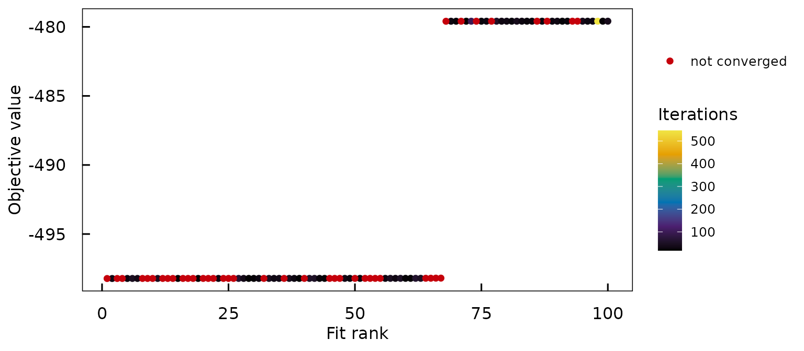
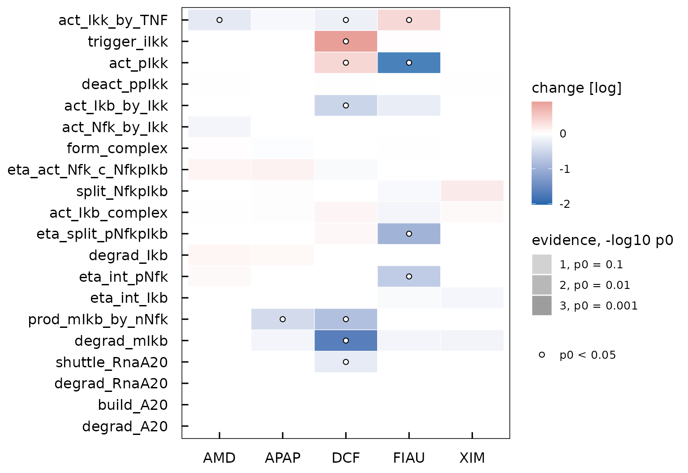

8. Sparse deviations
Source:vignettes/articles/guide-sparse-deviations.Rmd
guide-sparse-deviations.RmdOppelt et al. [1] also measured the TNFα
response under drugs causing liver injury: diclofenac (DCF) with the
imaging and blots of the first chapters, and amiodarone (AMD),
paracetamol (APAP), fialuridine (FIAU) and ximelagatran (XIM) with four
blots. Which pathway processes does each compound change? The
publication answered this for DCF with an L1 penalty on the differences
of all rate constants between treated and untreated cells, scanned over
the penalty strength. Here all five compounds are the groups of a
spike-and-slab random effect: a compound leaves a rate constant
unchanged or changes it by a normal draw, with probability and spread of
changes estimated from all compounds together. Code:
compounds.R, on the reduced model of Profile likelihood; random effects and
em() are introduced in Nonlinear
mixed-effects models.
The second part lists the sparse random-effect distributions (spike-and-slab, Dirichlet-process) and what their fits report; derivations are in Methods > Sparsity priors.
Compound data
Each compound has a separate control: DCF on the blots and imaging of
the first chapters, the other four on a third blot set with their own
untreated, stimulated control. A condition without compound belongs to
no group (NA in column compound).
# HepG2 cells: the first blot scale with and without TNFα and DCF, the third with TNFα and the
# other four compounds; a condition without a compound belongs to no group
cells <- subset(raw, cell == "HepG2" & (scale == 1 | (scale == 3 & treatment == "TNF")) &
(scale == 3 | compound %in% c("no", "DCF")))
cells$compound[cells$compound == "no"] <- NA
cells$blot <- paste0("blot", cells$scale)
cells$condition <- with(cells, paste(ifelse(treatment == "TNF", "TNF", "control"),
ifelse(is.na(compound), "none", compound), blot, sep = "_"))
dataCompounds <- as.datalist(cells[c("name", "time", "value", "sigma", "condition", "treatment",
"compound", "blot")],
splitBy = "condition", keepCovariates = c("treatment", "compound", "blot"))
covariates(dataCompounds)
#> condition treatment compound blot
#> TNF_none_blot1 TNF_none_blot1 TNF <NA> blot1
#> control_none_blot1 control_none_blot1 no <NA> blot1
#> TNF_DCF_blot1 TNF_DCF_blot1 TNF DCF blot1
#> control_DCF_blot1 control_DCF_blot1 no DCF blot1
#> TNF_none_blot3 TNF_none_blot3 TNF <NA> blot3
#> TNF_AMD_blot3 TNF_AMD_blot3 TNF AMD blot3
#> TNF_APAP_blot3 TNF_APAP_blot3 TNF APAP blot3
#> TNF_FIAU_blot3 TNF_FIAU_blot3 TNF FIAU blot3
#> TNF_XIM_blot3 TNF_XIM_blot3 TNF XIM blot3Spike-and-slab random effects
With \(\theta_k\) the log rate constant \(k\) and \(\eta_{ik}\) the change by compound \(i\), a condition with compound \(i\) uses \(\theta_k + \eta_{ik}\), one without uses \(\theta_k\). The spike-and-slab distribution [2], [3] of a change is
\[p(\eta_{ik}) = (1 - \rho)\, \delta(\eta_{ik}) + \rho\, \mathcal{N}(\eta_{ik};\, 0, \tau^2),\]
a spike at 0 with weight \(1 -
\rho\) and a normal slab of standard deviation \(\tau\) with weight \(\rho\). Changes are independent across
compounds and rate constants; \(\rho\),
\(\tau\) are shared. em()
estimates \(\theta\), \(\rho\) and \(\tau\) from the likelihood with the changes
integrated out, a sum over the subsets of changed rate constants (Methods >
Sparsity priors). The posterior spike probability \(p_0 = \Pr(\eta_{ik} = 0 \mid y)\) near 0
means a change, near the prior \(1 -
\rho\) no evidence, above it evidence against a change.
Each compound has 20 candidate rate constants, and the subset sum is
exact; beyond a term budget em() uses the expectation
consistent (EC) approximation (Methods > Spike
and slab). Comparison with the L1 penalty: Methods >
Selection of deviations.
Compound model
The reduced model of Profile
likelihood with second derivatives for em(). Its
resting state (all NFκB bound to IκBα, all IKK inactive) holds for all
rate constants, so a compound changes the dynamics only from TNFα
on:
# the reduced model with second derivatives forward over reverse, which the mixed-effects fit uses;
# the resting state of reduced.R holds for every value of the rate constants, so a compound
# changes the dynamics from the time of TNFα on
dm <- c("forward", "reverse", "forward-reverse")
candidates <- setdiff(getParameters(odemodel(reactionsReduced, compile = FALSE)),
c(reactionsReduced$states, names(gauge), names(fixedReduced), "dose_TNF"))
modelCompounds <- odemodel(reactionsReduced, events = events, modelname = "oppelt_cmp_ode",
compile = FALSE, derivMode = dm)
xCompounds <- Xs(modelCompounds, options = list(atol = 1e-10, rtol = 1e-8))
gCompounds <- Y(observablesReduced, xCompounds, modelname = "oppelt_cmp_obs", compile = FALSE,
derivMode = dm)
eCompounds <- Y(errors, gCompounds, modelname = "oppelt_cmp_err", compile = FALSE, derivMode = dm)x ~ 1 + (1 | gr(compound, dist = spikeSlab())) in
insert() replaces rate constant x by a fixed
effect plus a compound random effect. Candidates are the rate constants
the reduced model estimates, all but gauge and fixed values of the
publication. Scales and offsets of the third blot set are separate
parameters, except off_IkBa, fixed at 0 by the reduced
model.
# every rate constant the reduced model estimates, with a spike-and-slab random effect over the
# compounds; the blots of the third scale with scales and offsets of their own
blot3 <- setdiff(c("s_IkBa", "off_IkBa", "s_pIkBa", "off_pIkBa", "s_pIKK", "off_pIKK", "s_pNFkB",
"off_pNFkB"), names(fixedReduced))
trafoCompounds <- eqnvec() |>
define("x <- x", x = setdiff(getParameters(xCompounds, gCompounds, eCompounds),
reactionsReduced$states)) |>
define("x <- y", x = names(fixedReduced), y = fixedReduced) |>
define("x <- y", x = names(resting), y = resting) |>
insert("x <- exp(x)", x = .currentSymbols) |>
define("TNF <- 0") |>
branch(covariates(dataCompounds)) |>
define("dose_TNF <- 0", conditionMatch = "^control") |>
define("dose_TNF <- 1", conditionMatch = "^TNF") |>
insert("x <- y", x = blot3, y = paste0(blot3, "_blot3"), conditionMatch = "blot3$") |>
insert(x ~ 1 + (1 | gr(compound, dist = spikeSlab())), x = candidates)
pCompounds <- P(trafoCompounds, method = "explicit", modelname = "oppelt_cmp_par", compile = FALSE,
derivMode = dm)
compile(gCompounds, xCompounds, pCompounds, eCompounds, output = "oppelt_cmp",
cores = getOption("dMod2.cores"))
prdCompounds <- gCompounds * xCompounds * pCompounds
objCompounds <- normL2(dataCompounds, prdCompounds, eCompounds)Joint fit of all compounds
em() estimates fixed effects, change modes, \(\rho\) and \(\tau\) together. compounds.R
runs 200 starts, the reduced optimum with changes at 0 and 199 around
it, redrawing failed starts; helix.R splits them into
distributedComputing() tasks by msem(which = )
(Remote computing):
# the fixed effects from the reduced model at the optimum, those of the third blot from the first;
# the effects of the compounds start at 0, the hyperparameters at a few changes of moderate size
bestReduced <- as.parvec(readRDS("results/reduced.rds")$fits)
random <- randomEffects(pCompounds)
population <- setdiff(getParameters(prdCompounds), c(unlist(random$etas), names(gaugeReduced)))
init <- bestReduced[intersect(population, names(bestReduced))]
init[paste0(blot3, "_blot3")] <- bestReduced[blot3]
init[c("prob_compound", "tau_compound")] <- c(0.2, 0.5)
# the prior of model.R, that of the first blot also for the third
third <- function(v) c(v, setNames(v[blot3], paste0(blot3, "_blot3")))[population]
priorCompounds <- constraintL2(third(muReduced), sigma = third(sigmaReduced))
# the spread of the starts: per fixed effect half the 68 % profile interval of the reduced model,
# between 0.1 and 0.5 on the log scale, 0.5 where the profile is open and for the hyperparameters
ci <- confint(readRDS("results/reduced.rds")$profiles, level = 0.68)
width <- setNames(pmin(pmax((ci$upper - ci$lower) / 2, 0.1), 0.5), ci$name)
width <- c(width, setNames(width[intersect(blot3, names(width))], paste0(intersect(blot3, names(width)), "_blot3")))
sdStart <- setNames(rep(0.5, length(init)), names(init))
known <- intersect(names(sdStart), names(width)[!is.na(width)])
sdStart[known] <- width[known]
# 200 starts: the one above and 199 moved by sdStart, the probability of a change on the logit
# scale and the spread by a factor; a start whose fit fails is drawn again; every start runs to the
# end, with up to 1000 iterations of the trust region, one core each
set.seed(3)
fitCompounds <- msem(objCompounds + priorCompounds, random, init, fixed = gaugeReduced,
control = list(sparseFit = list(maxOuter = 1000, trustControl = list(tolControl = tolerances))),
fits = 200, sd = sdStart, keepFits = TRUE,
cores = getOption("dMod2.cores"))The best fit is saved with a table of all starts:
# the best fit with the table and the fits of all starts, saved without the model, which an
# evaluation at the estimates restores
saved <- fitCompounds
saved[c("design", "prdfn", "errfn", "data")] <- NULL
# the md5 of the files the result is computed from, which the guide checks on reading
sources <- c("model.R", "reduced.R", "compounds.R", "data/oppelt2018.csv", "results/reduced.rds")
attr(saved, "stamp") <- list(md5 = tools::md5sum(sources), dMod2 = packageVersion("dMod2"))
saveRDS(saved, "results/compounds.rds")
fit <- readRDS("results/compounds.rds")
c(value = fit$value, converged = fit$converged, iterations = fit$iterations)
#> value converged iterations
#> -498.2197 1.0000 54.0000
fit$argument[c("prob_compound", "tau_compound")]
#> prob_compound tau_compound
#> 0.5693377 0.8098347
fit$coupling
#> NULLvalue is \(-2 \log L\)
of the approximate marginal, iterations the steps of the
joint trust region of fixed effects and hyperparameters,
coupling the integral over coupled changes, here none:
every compound is integrated exactly.
Multistart optimization
The objective has local optima. msem() redraws a start
whose fit fails, e.g. where EC does not converge.
$multistart has per start value,
converged, iterations, attempts
(tries) and the error of a start that failed
every attempt. The waterfall shows the best 100 starts; a plateau is one
optimum.
plotValues(fit, rank(value, ties.method = "first") <= 100)
Of the 200 starts, 54 end within 1 of the best -2 log L, 20 did not converge and 0 failed.
Changes by compound
Changes with \(p_0 < 0.05\), with log-scale modes:
changes <- fit$random[fit$random$p0 < 0.05, c("group", "eta", "mode", "se", "p0")]
changes <- changes[order(changes$group, changes$p0), ]
rownames(changes) <- NULL
changes
#> group eta mode se p0
#> 1 AMD act_Ikk_by_TNF -0.6236264 0.19984152 5.547170e-03
#> 2 APAP prod_mIkb_by_nNfk -0.6792685 0.15466351 1.393103e-04
#> 3 DCF prod_mIkb_by_nNfk -0.7921479 0.05803567 0.000000e+00
#> 4 DCF degrad_mIkb -1.6578420 0.08888813 0.000000e+00
#> 5 DCF trigger_iIkk 0.9114912 0.18657175 8.075395e-07
#> 6 DCF act_pIkk 0.5766576 0.13598920 1.991485e-04
#> 7 DCF act_Ikb_by_Ikk -0.9749201 0.27060278 1.087037e-03
#> 8 DCF shuttle_RnaA20 -0.6644005 0.14014366 1.617996e-02
#> 9 DCF act_Ikk_by_TNF -0.5580331 0.16521016 2.794079e-02
#> 10 FIAU eta_split_pNfkpIkb -0.9531715 0.14002365 3.392044e-08
#> 11 FIAU eta_int_pNfk -0.7848230 0.16207891 1.383356e-05
#> 12 FIAU act_pIkk -2.0243687 0.42216213 1.614711e-05
#> 13 FIAU act_Ikk_by_TNF 0.7828162 0.28374356 4.366442e-03DCF changes 7 of the 20 rate constants, AMD 1, APAP 1, FIAU 4 and XIM
0. The probability of a change is 0.57, and a change has a spread of
0.81 on the log scale, a factor of about 2.2. Of the 7 rate constants
the L1 scan of the publication selected for DCF, the spike and slab
finds 6: IKK activation by TNFα (act_Ikk_by_TNF), IKK
recovery (trigger_iIkk), IKK phosphorylation
(act_pIkk), IκBα phosphorylation by pIKK
(act_Ikb_by_Ikk), IκBα transcription
(prod_mIkb_by_nNfk) and IκBα transcript degradation
(degrad_mIkb); not A20 translation
(build_A20), but the delay of the A20 transcript
(shuttle_RnaA20). [1]
shown <- fit$random
shown$eta <- factor(shown$eta, levels = unique(shown$eta))
shown$evidence <- -log10(pmax(shown$p0, 1e-6))
ggplot2::ggplot(shown, ggplot2::aes(group, eta)) +
ggplot2::geom_tile(ggplot2::aes(fill = mode, alpha = evidence), color = "white") +
ggplot2::geom_point(data = shown[shown$p0 < 0.05, ], ggplot2::aes(shape = "p0 < 0.05"),
fill = "white") +
ggplot2::scale_y_discrete(limits = rev) +
ggplot2::scale_fill_gradient2(low = "#2166ac", mid = "white", high = "#b2182b") +
ggplot2::scale_alpha(range = c(0.1, 1), limits = c(0, 6), breaks = 1:3,
labels = c("1, p0 = 0.1", "2, p0 = 0.01", "3, p0 = 0.001"),
guide = ggplot2::guide_legend(override.aes = list(fill = "gray30"))) +
ggplot2::scale_shape_manual(values = 21) +
ggplot2::labs(x = NULL, y = NULL, fill = "change [log]", alpha = "evidence, -log10 p0", shape = NULL) +
theme_dMod()
Each tile is one \(\eta_{ik}\); rate constants follow the pathway from IKK (top) to A20 (bottom). Color is the log-scale mode of the most probable structure: red increase, blue decrease, white no change (wherever the spike is more probable than the slab); \(-0.7\) halves a rate constant. Opacity is the evidence \(-\log_{10} p_0\), full from 6 on (\(p_0 < 10^{-6}\)). A pale tile is a small change, or \(p_0\) near or above \(1 - \rho\); circles mark \(p_0 < 0.05\), the table above. A colored tile without circle has \(p_0\) between 0.05 and 0.5.
Data and fit by compound
Prediction per compound at the estimated fixed effects and changes against the compound data, each point with its measured standard deviation, which the blots have in place of an error model; gray: the untreated, stimulated control of the same blots at the fixed effects alone. DCF blots span six hours, the others 50 minutes:
outer <- getParameters(prdCompounds)
estimates <- c(fit$argument, fit$fixed, setNames(fit$random$mode, fit$random$parameter))
pars <- setNames(numeric(length(outer)), outer)
pars[intersect(outer, names(estimates))] <- estimates[intersect(outer, names(estimates))]
treated <- grep("^TNF_[A-Z]", names(dataCompounds), value = TRUE)
controls <- sub("^TNF_[A-Z]+_", "TNF_none_", treated)
observed <- as.data.frame(dataCompounds)
times <- sort(unique(c(seq(0, 60, length.out = 200), seq(0, max(observed$time), length.out = 200))))
prediction <- as.data.frame(prdCompounds(times, pars, deriv = FALSE, conditions = union(treated, controls)))
# every compound with the untreated control on the same blots
blots <- c("IkBa", "pIkBa", "pIKK", "pNFkB")
byCompound <- function(frame) do.call(rbind, Map(function(cond, ctl) {
rows <- frame[frame$condition %in% c(cond, ctl) & frame$name %in% blots,
c("time", "name", "value", "sigma", "condition")]
rows$compound <- sub("^TNF_([A-Z]+)_.*", "\\1", cond)
rows$treatment <- ifelse(rows$condition == cond, "compound", "control")
rows
}, treated, controls))
points <- byCompound(observed)
# the curves over the time range of the data of the compound
curves <- byCompound(prediction)
curves <- curves[curves$time <= tapply(points$time, points$compound, max)[curves$compound], ]
colors <- c(compound = "#b2182b", control = "gray55")
ggplot2::ggplot(mapping = ggplot2::aes(time, value, color = treatment)) +
ggplot2::geom_line(data = curves) +
ggplot2::geom_errorbar(data = points, ggplot2::aes(ymin = value - sigma, ymax = value + sigma),
width = 0) +
ggplot2::geom_point(data = points) +
ggplot2::facet_grid(name ~ compound, scales = "free") +
ggplot2::scale_x_continuous(breaks = scales::breaks_pretty(n = 3)) +
ggplot2::scale_color_manual(values = colors) +
ggplot2::labs(x = "time [min]", y = "log signal [a.u.]", color = NULL) +
theme_dMod() +
ggplot2::theme(legend.position = "bottom")
Sparse random-effect distributions
gr(group, dist = ) sets the random-effect distribution
of a term. Besides normal(), two have deviations exactly
zero unless the data need them:
| distribution | a deviation \(\eta\) of a group | hyperparameters |
|---|---|---|
spikeSlab() |
\(0\) with probability \(1 - \rho\), else \(\mathcal{N}(0, \tau^2)\) |
prob_<grouping>,
tau_<grouping>
|
dirichletProcess() |
cluster value: \(0\) for the population cluster, else one \(\mathcal{N}(0, \tau^2)\) draw |
concentration_<grouping>,
tau_<grouping>
|
Hyperparameters are shared by the symbols of a term, numbered
_1, _2, … for several terms of one grouping,
and estimated with the fixed effects unless given, as in
spikeSlab(tau = 0.5). A spike-and-slab deviation is zero
with a probability reported per group. Under the Dirichlet process
groups share deviations in clusters with the population value, see Dirichlet-process random
effects. Normal and sparse random effects of one grouping combine;
em(method = "focei") fits all, Dirichlet-process ones also
method = "saem".
Fitting sparse random effects
em(method = "focei") integrates sparse random effects on
the Laplace approximation of the data term at the joint mode of a group,
exactly where possible, the spike-and-slab effects of a group jointly
even where the data couple them, and by EC where the data link a
Dirichlet-process effect to another factor or the subset sum leaves the
budget. Fixed effects and hyperparameters move in one trust region: no
EM iteration count, no random numbers. fit$coupling is
"expectationConsistent" if a group needed EC,
NULL if all are exact. Integral, gradient and
hyperparameter steps: Methods >
Approximate marginal, Methods
> Expectation consistent approximation and Methods >
Joint trust region.
entry of control$sparseFit
|
default | controls |
|---|---|---|
maxOuter |
200 |
joint trust-region iterations, all runs |
trustControl |
rinit = 1, rmax = 10,
ftol = 1e-10, mtol = 1e-5
|
joint trust region, as trust()
|
Other entries are an error. The compound fit uses the
trustControl tolerances of Setting up models, above the solver error in
value and gradient. A run stopping short of mtol restarts
while runs lower \(-2 \log L\) by more
than mtol. msem() perturbs concentrations and
slab standard deviations on log scale, slab probabilities on logit
scale.
Reported structure
The fit reports the most probable structure: subset of deviations
(spike and slab) or partition (Dirichlet process). Spike deviations are
exactly zero, slab deviations the posterior mean given the structure (Methods >
Reported structure). fit$random has a row per group and
random effect:
-
mode, this value; -
se, posterior standard deviation over spike and slab; - spike-and-slab and Dirichlet process:
cluster, 0 for the population value, 1, 2, … for deviating groups or clusters in group order, andp0, posterior probability of zero deviation; -
data, whether the random effect reaches data of the group, where some do not.
A sparse random effect reaching no data of the group (through
transformations, ODE, observables, error model) rests at 0 with the
prior standard deviation and, for spike and slab, \(p_0 = 1 - \rho\). fit$slab
lists probabilities, concentrations and slab standard deviations, each
with term symbols, estimate and whether fixed.
Standard errors
With spike-and-slab random effects fit$hessian is
NULL; vcov() inverts
fit$information, the empirical information from the group
scores. It needs more groups than parameters, or conditions without
random effects plus priors for the other directions; otherwise
vcov() is an error and standard errors are NA.
In the compound fit the conditions without compound and the prior
complete the five compounds. dirichletProcess() fits have
neither; confint(method = "profile") gives intervals.
Details: Methods
> Standard errors.
Dirichlet-process random effects
With gr(group, dist = dirichletProcess()) groups and
population value form clusters; the concentration \(\alpha\) sets how readily a group opens a
new one. The population cluster has deviation zero, every other cluster
one common deviation from \(\mathcal{N}(0,
\tau^2)\). \(\alpha\) and \(\tau\) are estimated by marginal maximum
likelihood in one fit, with no penalty to scan. The reported structure
is that of spike and slab with clusters in place of single deviations;
the compounds here are fitted without it.
method = "focei" sums exactly over partitions of up to
14 groups. method = "saem" draws partitions, allowing
normal random effects alongside but no other sparse ones, and reports
the most frequent partition of the late draws, from window
iterations after burn-in, with standard error valueSE of
\(-2 \log L\).
control$saem$particles sets the importance-sampling
particles, default 500; converged says whether burn-in
ended by the drift test. An SAEM fit has no gradient, Hessian or
empirical information. Details: Methods
> Sparsity priors.
Reference: randomEffects(), spikeSlab(),
dirichletProcess(), em(), msem(),
plotValues()
← 7. Nonlinear mixed-effects models | 9. Alignment of relative data measurements →